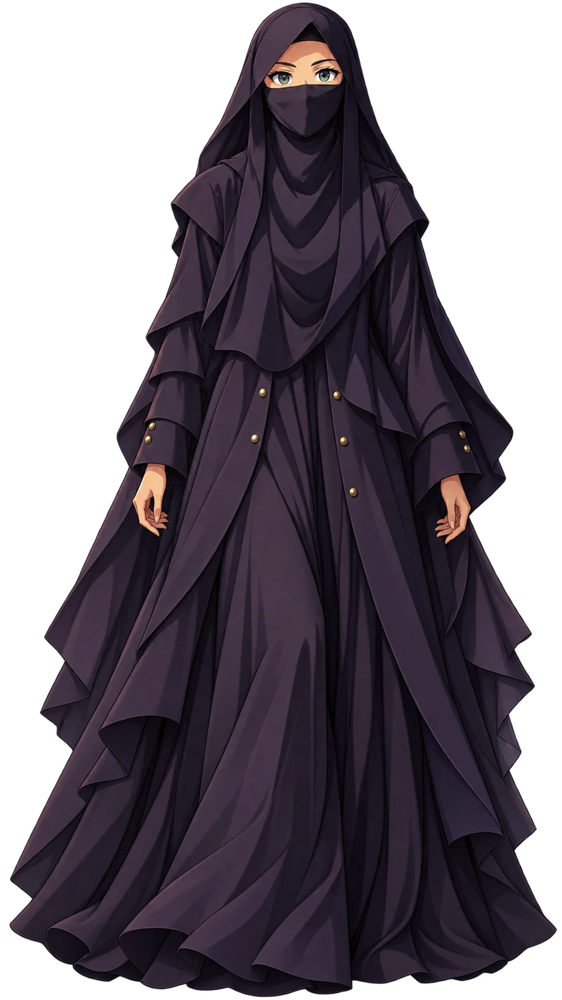

Portfolio

About me
Hi, my name is Ais.
I am a visual editor with a love for bold colours, little details and stories that stay with you.
I started editing in late 2024. What began as a little curiosity became my favourite creative habit.
A little quiet. A little curious.
Always making something new.
My experience
I began making edits in late 2024, just for the fun of it.
Since then, I have explored poster layouts, character edits and colourful visual worlds.
Now I am building a personal collection, learning one composition at a time.
Open to thoughtful creative collaborations.
ME
AIS
My project
AIS / VISUAL DIARY01 · Cyan signal
A fictional poster study exploring cyan light, dark silhouettes and technical grids.
02 · Little universe
A soft lavender character composition with playful shapes and airy type.
03 · Colour club
A bright collage study about friendship, movement and shared creative energy.
04 · Violet hour
A purple glass-object study, bringing reflections and luminous surfaces together.
05 · Redline
A fictional red racing composition with layered shapes and dynamic perspective.
06 · Moon garden
A quiet moonlit tree study balancing cool blues and a small pool of light.
Let's create something.
Have a story in mind? I would love to hear it.
hello@aisfolio.example